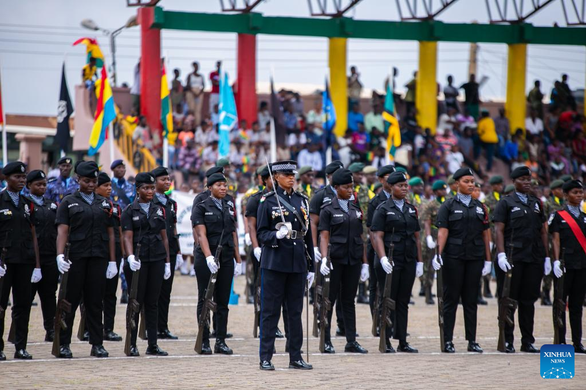
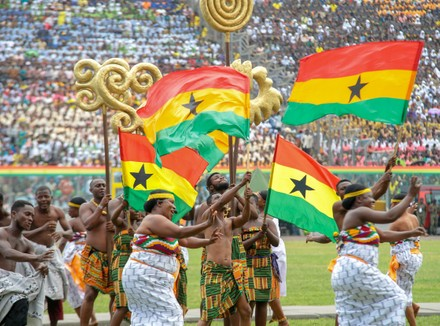
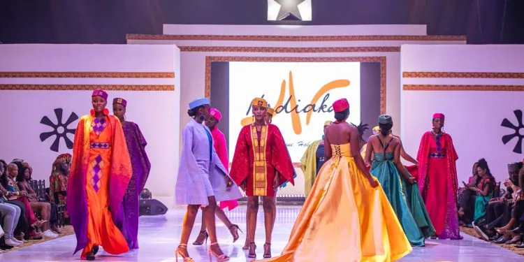

Independence Square, also known as Black Star Square, is a historic site in Accra,
Ghana, that holds great significance in the country's struggle for independence. The square was
commissioned by Kwame Nkrumah, Ghana's first prime minister and president, after the country gained
independence from
Britain in 1957
The construction of the square was completed in 1961, coinciding with the state visit of Queen Elizabeth II .
Since then, it has been the site for all major national public gatherings, national festivals, military parades, concerts,
and even fashion shows ³.
- Independence Arch: Located at the southern end of the square, the arch is backed by the Gulf of Guinea ² ³.
- Memorial of the Unknown Soldier: Honors Ghanaian soldiers who fell fighting for their country ³.
- Black Star Gate: An imposing monument topped by the Black Star of Africa, symbolizing Africa and Ghana ² ³.
- Liberation Day Monument: Commemorates the country's liberation from colonial rule ².
Use of the Place The square hosts various events throughout the year, including: - Independence Day Parade: Held annually on March 6 to commemorate Ghana's independence ¹ ² ³. - National Festivals: Celebrations of Ghanaian culture and heritage. - Military Parades: Showcase of Ghana's military might. - Concerts and Fashion Shows: Entertainment events that bring the community together. Overall, Independence Square is a symbol of Ghana's struggle for independence and a testament to the country's rich history and culture ¹
  Lighthouse
An iconic landmark in Jamestown The Lighthouse is an iconic landmark in Jamestown, located on the Prof. Atta Mills High Street in Accra The monument consists of a tower and an adjoining maintenance residence. The Lighthouse is painted white with red horizontal bands. It was first built by the British in 1871, 3 years before they established the Gold Coast Colony on 24th July, 1874 and was a symbol of their expanding colonial ambitions on the coast. m. The Jamestown Lighthouse was built in 1871 by the British, during the colonial era. The lighthouse was constructed to serve as a navigational aid for ships entering the Accra Harbour. Architecture The Jamestown Lighthouse is a 34-meter-tall (112 ft) tower made of stone and brick. The tower is cylindrical in shape, with a gallery and a lantern room at the top. The lighthouse is painted with distinctive black and white stripes, making it a recognizable landmark in Accra.
Tourism Visitors to the Jamestown Lighthouse can climb to the top of the tower for stunning views of the Accra coastline. The lighthouse is also surrounded by a small museum and a gift shop, where visitors can learn more about the history of the lighthouse and purchase souvenirs. Restoration Efforts In recent years, the Ghanaian government has undertaken efforts to restore and preserve the Jamestown Lighthouse. The restoration project aimed to repair damage caused by years of exposure to the elements and to return the lighthouse to its original condition. Cultural Significance The Jamestown Lighthouse is not only an important navigational aid but also a significant cultural landmark. The lighthouse has been featured in several Ghanaian artworks, literature, and music, and is considered a symbol of Ghana's rich cultural heritage. Current Status The Jamestown Lighthouse is still operational today, although it has undergone several renovations and restorations over the years. The lighthouse is now a popular tourist attraction and a symbol of Ghana's rich maritime history.
Osu Castel
Osu Castle, also known as Fort Christiansborg or Christiansborg Castle, is a historic castle located in Osu, Accra, Ghana. The castle has a rich and complex history that spans over 400 years.
Early History (1652-1693)
The castle was originally built by the Swedes in 1652 as a trading post and fortification. The Swedes named it Fort Christiansborg, after the Danish king Christian IV. The fort was used for the trade of gold, ivory, and slaves.
Danish Rule (1693-1850)
In 1693, the Danish took control of the fort and expanded it into a larger castle. The Danes used the castle as their colonial headquarters in Ghana and as a center for the transatlantic slave trade.
British Rule (1850-1957)
In 1850, the British purchased the castle from the Danes and used it as their colonial headquarters in Ghana. The British made significant changes to the castle, including the addition of new buildings and the renovation of existing ones.
Ghanaian Independence (1957) After Ghana gained independence in 1957, the castle was used as a presidential palace and residence. However, in 2005, the Ghanaian government decided to renovate the castle and convert it into a museum. Museum and Tourist Attraction (2005-Present) Today, Osu Castle is a popular tourist attraction and museum. The castle features exhibits on the history of Ghana, the transatlantic slave trade, and the colonial era. Visitors can also explore the castle's dungeons, which were used to hold slaves before they were transported to the Americas. Architecture Osu Castle is a unique blend of European and African architectural styles. The castle's design reflects the various cultures that have influenced Ghana's history, including the Swedes, Danes, and British. Cultural Significance Osu Castle is a significant cultural and historical landmark in Ghana. The castle serves as a reminder of the country's complex and often painful history, including the transatlantic slave trade and colonialism. However, it also symbolizes Ghana's resilience and its ability to overcome adversit
to get updated and informed on everything about
tourist site subcribe to your channel